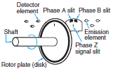
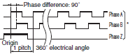
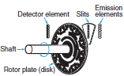
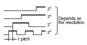

Rotary Encoders
Rotary Encoders measure the number of rotations, the rotational angle, and the rotational position. Linear Encoders are also available to measure linear movement.
| Introduction |
|
|
|
|
|
|
|
|
|
Troubleshooting |
Related Contents
- Rotary Encoders
What Is a Rotary Encoder?
Rotary Encoders are sensors that detect position and speed by converting rotational mechanical displacements into electrical signals and processing those signals. Sensors that detect mechanical displacement for straight lines are referred to as Linear Encoders.
Features
1. The output is controlled according to the rotational displacement of the shaft.
Linking to the shaft using a coupling enables direct detection of rotational displacement.
3. The rotation direction can also be detected.
The rotation direction is determined by the output timing of phases A and B with an Incremental Encoder, and by the code increase or decrease with an Absolute Encoder. (Refer to Operating Principles of below.)
4. Choose the optimal Sensor from a wide lineup of resolutions and output types.
Select the Sensor to match the requirements for precision, cost, and connected circuits.
Operating Principles
| Item | Features | Structure | Output waveform |
| Classification | |||
| Incremental Encoders E6A2-C E6B2-C E6C2-C E6C3-C E6D-C E6F-C E6H-C | This type of encoder outputs a pulse string in response to the amount of rotational displacement of the shaft. A separate counter counts the number of output pulses to determine the amount of rotation based on the count. To detect the amount of rotation from a certain input shaft position, the count in the counter is reset at the reference position and the number of pulses from that position is added cumulatively by the counter. For this reason, the reference position can be selected as desired, and the count for the amount of rotation can be unlimited. Another important feature is that a circuit can be added to generate twice or four times the number of pulses for one signal period, for heightened electrical resolution. * Also, the phase-Z signal, which is generated once a revolution, can be used as the origin within a revolution. * When high resolution is necessary, a 4-multiplier circuit is generally used. (4x output is obtained by differentiating the rise and fall waveforms of phase A and phase B, resulting in four times the resolution.) |  When a disk with an optical pattern revolves along with the shaft, light passing through two slits is transmitted or blocked accordingly. The light is converted to electrical currents in the detector elements, which correspond to each slit, and is output as two square waves. The two slits are positioned so that the phase difference between the square wave outputs is 1/4 pitch. |  * Even if resolution changes, the number of phases does not change. |
| Absolute Encoders E6CP-A E6C3-A E6F-A | This type of encoder outputs in parallel the rotation angle as an Absolute value in 2n code. It therefore has one output for each output code bit, and as the resolution increases, the value of outputs increases. Rotation position detection is accomplished by directly reading the output code. When the Encoder is incorporated into a machine, the zero position of the input revolution shaft is fixed, and the rotation angle is always output as a digital value with the zero position as the coordinate origin. Data is never corrupted by noise, and returning to the zero position at startup is not necessary. Furthermore, even when code reading becomes impossible due to high-speed rotation, correct data can be read when the rotation speed slows, and correct rotation data can even be read when the power is restored after a power failure or other interruption in the power supply. |  When a disk with a pattern rotates, light passing through the slits is transmitted or blocked according to the pattern. The received light is converted to electrical currents in the detector elements, takes the form of waves, and becomes digital signals. |  |
Classification
For details, refer to Operating Principles of upper.
Selection Guidelines
[1] Incremental Encoder or Absolute Encoder?
Select a type that is suitable in terms of the cost vs. capacity, returning (or not) to the origin at startup, the maximum speed, and noise tolerance.
[2] How much resolution is needed?
Select the optimal model in view of required precision and cost of machine equipment. We recommend selecting a resolution of from 1/2 to 1/4 of the precision of the machine with which the Encoder will be used.
[3] Dimensions
Also take into consideration the type of shaft that is required (hollow shaft or regular shaft) in relation to mounting space.
[4] Permitted Shaft Loading
When selecting, take into consideration how the mounting method affects the load on the shaft and mechanical life.
[5] Maximum Permissible Speed
Base your selection on the maximum mechanical speed during use.
[6] Maximum Response Frequency
Base your selection on the maximum shaft speed when the device in which the Encoder is used is in operation.
Maximum response frequency = (Revolutions (RPM) /60) x Resolution.
There are deviations in the actual signal periods, so the specifications of the selected model should provide a certain amount of leeway with respect to the above calculated value.
[7] Degree of Protection
Select the model based on how much dust, water, and oil there is in the application environment.
Dust only: IP50
Water or oil also present: IP52(f), IP64(f) (water-resistant, oilresistant)
Oil present: Oil-proof construction
[8] Startup Torque of Shaft
How much torque does the drive have?
[9] Output Circuit Type
Select the circuit type based on the device to be connected, the frequency of the signal, transmission distance, and noise environment.
For long distance transmission, a line-driver output is recommended.